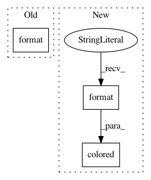

c9628b38e1912774ef96437e14f93f959e3ceb6b,tests/test_inference.py,,,#,471
Before Change
print(colored("Importance sampling : ", "yellow", attrs=["bold"]), end="")
print(colored("{:+.6e}".format(perf_score_importance_sampling), "white", attrs=["bold"]))
print(colored("Inference compilation: ", "yellow", attrs=["bold"]), end="")
print(colored("{:+.6e}".format(perf_score_inference_compilation), "white", attrs=["bold"]))
print(colored("Metropolis Hastings : ", "yellow", attrs=["bold"]), end="")
print(colored("{:+.6e}\n".format(perf_score_metropolis_hastings), "white", attrs=["bold"]))
sys.exit(0 if success else 1)
After Change
print(colored("Lightweight Metropolis Hastings: ", "yellow", attrs=["bold"]), end="")
print(colored("{:+.6e} {:,.2f}".format(kl_divergence_lightweight_metropolis_hastings, duration_lightweight_metropolis_hastings), "white", attrs=["bold"]))
print(colored("Random-walk Metropolis Hastings: ", "yellow", attrs=["bold"]), end="")
print(colored("{:+.6e} {:,.2f}\n".format(kl_divergence_random_walk_metropolis_hastings, duration_random_walk_metropolis_hastings), "white", attrs=["bold"]))
sys.exit(0 if success else 1)
In pattern: SUPERPATTERN
Frequency: 3
Non-data size: 3
Instances
Project Name: pyprob/pyprob
Commit Name: c9628b38e1912774ef96437e14f93f959e3ceb6b
Time: 2018-04-19
Author: atilimgunes.baydin@gmail.com
File Name: tests/test_inference.py
Class Name:
Method Name:
Project Name: IDSIA/sacred
Commit Name: 3f40d5d2df611a3a76c325730f87a06bd0db0a00
Time: 2014-05-19
Author: klaus@idsia.ch
File Name: sacred/commands.py
Class Name:
Method Name: cfgprint
Project Name: wkentaro/labelme
Commit Name: d1a0092557861775f786686e3bcda1a39ac75197
Time: 2020-03-06
Author: www.kentaro.wada@gmail.com
File Name: labelme/logger.py
Class Name: ColoredFormatter
Method Name: format